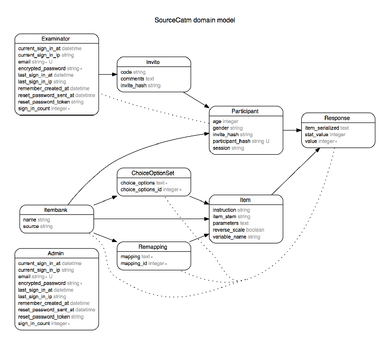

README
Ruby version
MultiCAT GUI has been tested on: * ruby version 2.1 (2.1.5) * R version >3 (3.1.3)
Gems and other dependencies are managed through bundler. Run bundle install to install all other dependencies.
Basic domain model
The domainmodel below depicts how models are related. Rails, using ActiveRecord, has a strong coupling between model and storage of the model’s values in the database.

TODO
The MultiCAT doesn’t support multiple CAT-configurations yet, although much is in place to support this.
Debugging ShadowCAT
ShadowCat is the actual MultiCAT-engine that powers this MultiCAT. It can be installed as follows:
install.packages('devtools')
library(devtools)
install_github('Karel-Kroeze/MultiGHQuad')
install_github('Karel-Kroeze/ShadowCAT@backup')
To quickly boot up:
##
#' @title Fire and Forget wrapper for multidimensional computerized adaptive testing with the shadow test procedure.
#' @author Karel Kroeze, Maarten Brouwers
#' @param administered, vector of indices of administered items.
#' @param responses, vector of responses to administered items. Assumed to be sorted with administered.
#' @return list of;
#' status; status code.
#' estimate; vector/numeric of estimates per dimension
#' variance; matrix/numeric variance/covariance matrix
#' next_item; index for the next item to be presented
MCAT <- function(administered, responses, estimate) {
# Make sure prerequisites are loaded.
require(ShadowCAT)
# set up required objects (with presets to MCAT-COPD).
# set a seed to load a fixed bank.
set.seed(1)
# load a test itembank.
items <- createTestBank("GRM", K = 200, Q = 4, M = 7, between = TRUE)
# initiate person
person <- initPerson(items, prior = matrix(c(1,.5,.5,.5,
.5,1,.5,.5,
.5,.5,1,.5,
.5,.5,.5,1),4,4))
# initiate test
test <- initTest(items,
start = list( type = 'randomByDimension', n = 3, nByDimension = 1),
stop = list( type = 'variance', target = .2),
max_n = 30
estimator = 'MAP',
selection = 'MI',
objective = 'PD')
# insert admin + responses.
person$administered <- administered
person$responses <- responses
person$available <- person$available[-person$administered]
# set previous estimate
person$estimate <- estimate
# get estimate
person <- estimate(person, test)
# get next item
next_item <- next_item(person, test)
# is test done? (boolean)
done <- stop_test(person, test)
return(list(status = 0, estimate = person$estimate, variance = diag(attr(person$estimate, 'variance')), next_item = next_item))
}
#' createTestBank
#'
#' Creates a test bank. Temporary fix until we have a set itembank.
#' TODO: update with real itembank, remove code.
createTestBank <- function(model, K = 50, Q = 1, M = 4, between = FALSE){
# 3PLM is dichotomous by definition
if (model == "3PLM") M <- 1
# make sure the number of items is divisible by the number of dimensions
if (between) K <- ceiling(K/Q) * Q
# set up alpha, very rough uniform from .3 to 1.5
alpha <- matrix(runif(K * Q, .3, 1.5), K, Q)
# if between, force items to load on one dimension each.
if (between){
set = K / Q
for (i in 1:Q){
alpha[((i-1)*set+1):(i*set), (1:Q)[-i]] <- 0
}
}
# spread polytomous items cats -2 to +2.
spread <- seq(-2,2,length.out=M)
# base loading for items
beta <- matrix(rnorm(K), K, 1)
# apply spread for polytomous, betas are strictly monotously increasing because the spread is.
# apply transposes the matrix...
if (M > 1) beta <- t(apply(beta, 1, function(x) x + spread))
# reparameterize GPCM
if (model == "GPCM") {
# make betas
eta <- beta
for (i in 1:M) {
# rolling sum, apply over all items
beta[,i] <- apply(eta[,1:i, drop=FALSE], 1, sum)
}
}
# create Itembank object
items <- initItembank(model, alpha, beta, silent = TRUE)
# return
return(invisible(items))
}